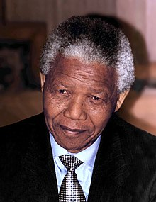

Nelson Mandela
The man who fought for freedom

Nelson Mandela upon his release and South Africa getting Independence (1994)
Here's a time-line of Nelson Mandela's life:
- 1908 - Rolihlahla Mandela was born into the Madiba clan in the village of Mvezo, in the Eastern Cape, on 18 July 1918. His mother was Nonqaphi Nosekeni and his father was Nkosi Mphakanyiswa Gadla Mandela, principal counsellor to the Acting King of the Thembu people, Jongintaba Dalindyebo.
- 1930 - In 1930, when he was 12 years old, his father died and the young Rolihlahla became a ward of Jongintaba at the Great Place in Mqhekezweni
- 1938 - He attended primary school in Qunu where his teacher, Miss Mdingane, gave him the name Nelson, in accordance with the custom of giving all schoolchildren “Christian” names. He completed his Junior Certificate at Clarkebury Boarding Institute and went on to Healdtown, a Wesleyan secondary school of some repute, where he matriculated.
- 1939 - Mandela began his studies for a Bachelor of Arts degree at the University College of Fort Hare but did not complete the degree there as he was expelled for joining in a student protest.
- 1943 - He completed his BA through the University of South Africa and went back to Fort Hare for his graduation in 1943.
- 1944 - Mandela, while increasingly politically involved from 1942, only joined the African National Congress in 1944 when he helped to form the ANC Youth League (ANCYL). In 1944 he married Walter Sisulu’s cousin, Evelyn Mase, a nurse.
- 1949 - Mandela rose through the ranks of the ANCYL and through its efforts, the ANC adopted a more radical mass-based policy, the Programme of Action, in 1949.
- 1952 - In 1952 he was chosen as the National Volunteer-in-Chief of the Defiance Campaign with Maulvi Cachalia as his deputy. Meanwhile, he began studying for an LLB at the University of the Witwatersrand. By his own admission he was a poor student and left the university in 1952 without graduating. In August 1952 he and Oliver Tambo established South Africa’s first black-owned law firm in the 1950s, Mandela & Tambo.
- 1955 - At the end of 1952 he was banned for the first time. As a restricted person he was only permitted to watch in secret as the Freedom Charter was adopted in Kliptown on 26 June 1955.
- 1956 - Mandela was arrested in a countrywide police swoop on 5 December 1956, which led to the 1956 Treason Trial. Men and women of all races found themselves in the dock in the marathon trial that only ended when the last 28 accused, including Mandela, were acquitted on 29 March 1961.
- 1960 - On 21 March 1960 police killed 69 unarmed people in a protest in Sharpeville against the pass laws. This led to the country’s first state of emergency and the banning of the ANC and the Pan Africanist Congress (PAC) on 8 April. Mandela and his colleagues in the Treason Trial were among thousands detained during the state of emergency.
- 1963 - On 9 October 1963 Mandela joined 10 others on trial for sabotage in what became known as the Rivonia Trial. While facing the death penalty his words to the court at the end of his famous "Speech from the Dock" on 20 April 1964 became immortalised
- 1964 - On 11 June 1964 Mandela and seven other accused, Walter Sisulu, Ahmed Kathrada, Govan Mbeki, Raymond Mhlaba, Denis Goldberg, Elias Motsoaledi and Andrew Mlangeni, were convicted and the next day were sentenced to life imprisonment. Goldberg was sent to Pretoria Prison because he was white, while the others went to Robben Island.
- 1982 - On 31 March 1982 Mandela was transferred to Pollsmoor Prison in Cape Town with Sisulu, Mhlaba and Mlangeni. Kathrada joined them in October. When he returned to the prison in November 1985 after prostate surgery, Mandela was held alone. Justice Minister Kobie Coetsee visited him in hospital. Later Mandela initiated talks about an ultimate meeting between the apartheid government and the ANC.
- 1988 - On 12 August 1988 he was taken to hospital where he was diagnosed with tuberculosis. After more than three months in two hospitals he was transferred on 7 December 1988 to a house at Victor Verster Prison near Paarl where he spent his last 14 months of imprisonment. He was released from its gates on Sunday 11 February 1990, nine days after the unbanning of the ANC and the PAC and nearly four months after the release of his remaining Rivonia comrades. Throughout his imprisonment he had rejected at least three conditional offers of release.
- 1989 - In 1989, while in the last months of his imprisonment, he obtained an LLB through the University of South Africa. He graduated in absentia at a ceremony in Cape Town.
- 1991 - Mandela immersed himself in official talks to end white minority rule and in 1991 was elected ANC President to replace his ailing friend, Oliver Tambo. In 1993 he and President FW de Klerk jointly won the Nobel Peace Prize and on 27 April 1994 he voted for the first time in his life.
- 1994 - On 10 May 1994 he was inaugurated as South Africa’s first democratically elected President. On his 80th birthday in 1998 he married Graça Machel, his third wife.
- 1999 - True to his promise, Mandela stepped down in 1999 after one term as President. He continued to work with the Nelson Mandela Children’s Fund he set up in 1995 and established the Nelson Mandela Foundation and The Mandela Rhodes Foundation.
- 2007 - Nelson Mandela never wavered in his devotion to democracy, equality and learning. Despite terrible provocation, he never answered racism with racism. His life is an inspiration to all who are oppressed and deprived; and to all who are opposed to oppression and deprivation.
- 2013 - He died at his home in Johannesburg on 5 December 2013.
"For to be free is not merely to cast off one's chains, but to live in a way that respects and enhances the freedom of others." —Nelson Mandela